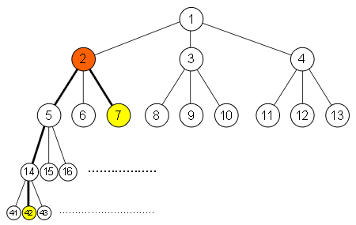

Given a labeled complete k-ary tree, find the largest labeled common ancestor of two given nodes. In a complete k-ary tree, the node in the tree is labeled sequentially from the left most child to the right most child, level by level. Largest labeled common ancestor of A and B is defined as the largest labeled node in the tree which has both A and B as descendants. A node is a descendant of itself.
For example, given a k-ary tree with k = 3, the largest labeled common ancestor of node 42 and 7 is node 2 (see the picture below).
The first line of input contains an integer T (1 ≤ T ≤ 100) the number of cases. Each case contains three integers K, A and B (2 ≤ K ≤ 100; 1 ≤ A, B ≤ 2,000,000,000).
For each test case, output in a line the largest labeled common ancestor node.
|